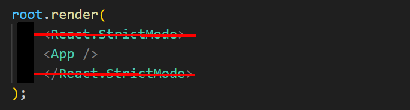
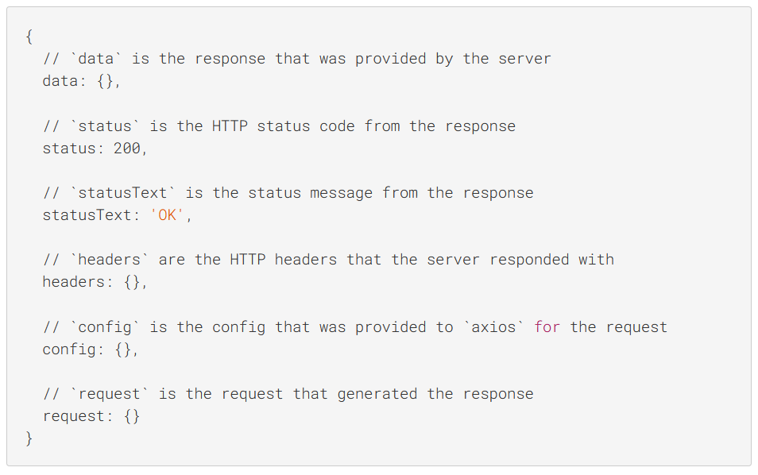
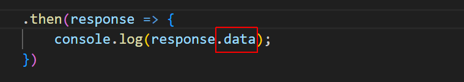
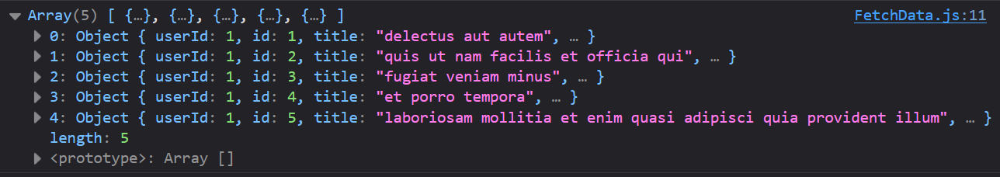
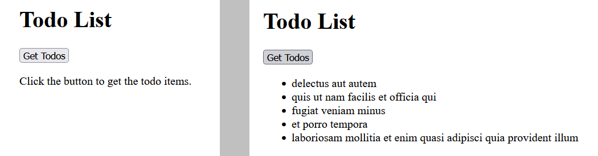

Learning Goals
At the end of this Tutorial, you will be able to:
- Use the Axios API with parameters to retrieve data from a remote server.
Introduction to Axios
Axios is a popular JavaScript library used to make HTTP requests. It works in both the browser and Node.js environments. Axios is often preferred over the native fetch API due to its simplicity and ability to handle requests and responses more conveniently.
Getting started with create-react-app
Follow these steps to build the basic app structure with the create-react-app script.
- Open a new Command Prompt or, in VS Code, a new Terminal.
- Navigate to the folder where you want to create your app. For example:
C:\>myapps
- Type the following command that includes the name you want to call your new app.
C:\>myapps\> npx create-react-app react-axios
After you have created your app, you launch it by running the following command from inside your app folder.
C:\>myapps\> npm start
A new browser window should display with your new app running on the React local development server. If not, open a new browser tab and enter http://localhost:3000.
You will see a screen similar to the following.

Customising the CRA boilerplate content
In this section, you will customise the 'boilerplate' content provided by the create-react-app script to design your To Do app.
- Open the index.html file in the /public folder and replace all its content with the following.
<!DOCTYPE html> <html lang="en"> <head> <meta charset="utf-8" /> <meta name="viewport" content="width=device-width, initial-scale=1" /> <title>React AXIOS App</title> <meta name="description" content="eCommerce website created with React.js" /> <link rel="manifest" href="%PUBLIC_URL%/manifest.json" /> </head> <body> <div id="root"></div> </body> </html> - Open the index.js file in the /src folder and replace all its content with the following.
import React from 'react'; import ReactDOM from 'react-dom/client'; import App from './App'; const root = ReactDOM.createRoot(document.getElementById('root')); root.render( <React.StrictMode> <App /> </React.StrictMode> ); - Open the App.js file in the /src folder and replace its content with the following.
function App() { return ( <> <h1>Hello, World!</h1> <p>Paragraph of text.</p> </> ); } export default App;
Your web page should now look as shown below.

Fetching data with Axios
This section lists the steps for fetching data with Axios. The example shows how to retrieve the first five items from a Todo list stored on a remote server.
1: Install the Axios package
Navigate your app's root folder and run the following command:
npm install axios
2: Add a new component to fetch and display the data
- Create a new component file named FetchData.js in your app's /src folder.
- At the top of this file, enter this import statement:
import axios from 'axios'; - Add the following function to the component.
function FetchData() { } export default FetchData; - In your main App.js component, replace the JSX with FetchData component.
function App() { < FetchData /> } - Finally, import this component at the top of your App.js component
import FetchData from './FetchData';
3: Create the function to fetch the data
Follow the steps below:
- In your FetchData.js component, update the function as shown below.
function FetchData() { axios.get("https://jsonplaceholder.typicode.com/todos", { params: { _limit: 5, } }) .then(response => { console.log(response); }) .catch(error => { console.log(error); }) return ( <>Todo List
</> ) }
4: Remove duplicate API calls
When you view the output in your console, you can see that the API has been called twice.
To resolve this, open the index.js file and delete the <React.StrictMode> wrapper around the <App /> component.
5: View the response object
In the console, you can see that the Axios response object includes lots of status information in addition to the requested data.
To work only with the data, update the .then promise as shown below.
Your console output should now look similar to that shown below.
6: Add a button to display the data
Update the JSX part of the component as follows.
return (
<>
<h1>Todo List</h1>
<button onClick={getTodos}>Get Todos</button>
{todos.length > 0 ? (
<ul>
{todos.map(todo => (
<li key={todo.id}>{todo.title}</li>
))}
</ul>
) : (
<p>Click the button to get the todo items.</p>
)}
</>
);7: Update the component with the useState hook
At the top of the file, add the following import statement.
import{ useState } from 'react';
Update the FetchData() function as follows:
function FetchData() {
const [todos, setTodos] = useState([]);
const getTodos = () => {
axios.get("https://jsonplaceholder.typicode.com/todos", {
params: {
_limit: 5,
}
})
.then(response => {
setTodos(response.data);
})
.catch(error => {
console.error('Error fetching data: ', error);
});
};Your browser window should look as shown below.
